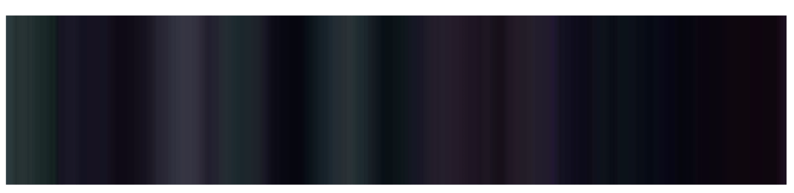
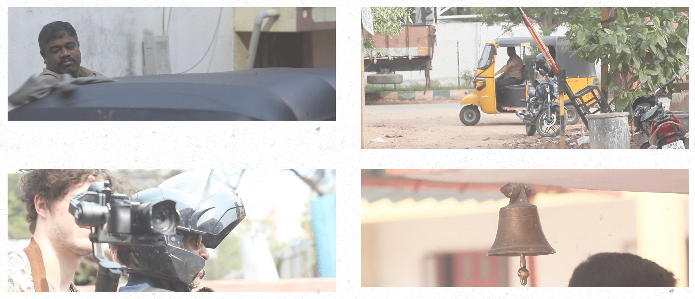

The timed-based sector is for temporal experiments.
Git For Filmmakers Making a powerful version-control system accessible to filmmakers.
Slitschan Experiments Explorations of alternative temporal spaces inside videos.
Midi Plotter Printing-process as Time-based Media Printing as timed-based media.
Links to this entry:
mediumslinked entries ⤳
Many creative professions have no high quality version control systems. Film-making is one profession in which the majority of practitioners use only very limited systems for version control. The lack of version control makes collaboration hard as there are many barriers to share, explore, and merge projects.
This project seeks to provide a simple and powerful interface for filmmakers to visualise how their project files changed of time, do collaborative editing, and better document their projects.
Static Representions of Time-based Media
Some media like text and images provide the entirety of their state in their static form. The piece of text or a picture we put on our wall is glanceable. This does not mean that we can experience the media fully with a glance - we must actually read the text or look at the picture. However, with a glance we can observe the full state of the medium.
An example of a media where this is not the case is video - as a time-based medium one can only experience the full state by directing our attention continously to the media. For a long time I have been interested in trying to craft a static representation of video. A representation which captures the dimension of time in a tangible way.
One way of statically representing a video is by creating a slitscan of it. In a slitscan every column of pixels is taken from a different frame of the source video. The resulting image is a collage of pixels taken from varying timestamps and varying visual coordinates. However, this representation of the time-based medium is rather coarse:

Midi Plotter
A Rust program which makes it possible to visualise midi notes with the HP7440A pen plotter as they are received. This project grew out of my fascination with printing technologies and a desire to explore whether printing can be seen as a time-based media. I wrote a reflection on what it means for printing to be a time-based elsewhere on this site.
Once finished I had a few different people try out the program. One friend started playing Partita by Bach: above is the pen plotter visualisation of her performance alongside the traditional representation of the piece.
When you perform with the pen plotter it almost becomes a second performer as the rhytmns and sounds the plotter makes as it draws merges with the notes you play on your instrument:

Modeling Color in Film
I always liked thinking about how color is used to generate various experieces in film. Based on this interest, a friend and I decided to try to model the change of color in feature films. Our model's output was a colour timeline like the one seen below. Each point in a colour timeline represent the average colour of the film at that point. The point approximately covers a 10 second window.
 (From the movie Insidious, (2010))
The colour seen at each point in the timeline above is composed of a particular, hue, saturation and lightness. If these variables are separated and graphed independently then you get a timeline which looks like the one seen below.
 (From the movie Insidious (2010))
(From the movie Insidious (2010))
In this visualisation the hue is shown at the background of the plot, the saturation shown as a black line, and the lightness as a white line. Hue is a cyclical data type which makes it inappropriate in the line plot form that saturation and lightness take. Therefore we plot it as the background.
In our model, hue, saturation and lightness change slightly most of the time, and change greatly quite rarely. The small changes seeks to capture the gradual changes happening within a scene or arc of a movie. The large changes represent either a mood or scene change in the movie. We decided to have the concepts of a slight change and a major change because the scale of change and the frequency of these two are very different. For a scene change the hue might jump thirty values in the 360 values wide space between two frame, a change that might take thousands of steps with small changes. This is similar when looking at saturation or lightness.
The model’s state consists of:
- The average colour of the frame, broken down into hue (angle in degrees), saturation (from 0 to 1), and lightness (from 0 to 1)
- The steps_since_direction_change (integer)
- The saturation_gradient (angle in radians), which the saturation will follow
- The independent_lightness (from 0 to 1), which is combined with the inverse of saturation to calculate lightness
We did some validation of the model by comparing with indepedently chosen movies. Example of such comparison is below: the blue dots represent the controls and the red dots the generated movies.

There is a lack of documentaries which do not exoticise rickshaw drivers nor depict them as inferior or poor. Our documentary project aimed to capture the lives of rickshaw driver families in an honest way.
This project was conducted by three filmmakers (including me) and two Hyderabadi locals. We did not immediately define what the documentary would be about but focused on building good relationships with four rickshaw driver families. I was one of the cameramen capturing the environment whenever we went out to visit one of the families. I also supported our local collaborators when we were conducting interviews. By going through this process, we were able to capture the unique stories of each family: their backstories, duties, and dreams.
During post-production, I was part of the three-person core team responsible for finding the story and editing everything together.